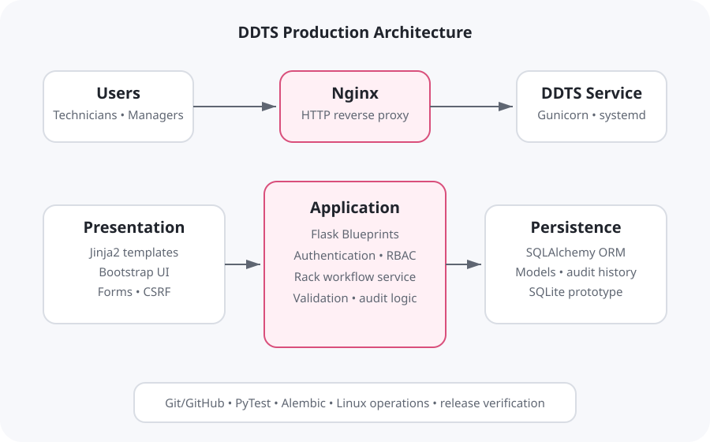

Automated tests passed
The final suite covered authentication, protected routes, rack views and updates, deployment behavior, workflow logic, and database-backed operations.
MSIT 5910 Capstone Project
A centralized, role-aware web application for managing rack deployments, enforcing sequential workflow rules, and preserving an auditable history of operational changes.
Problem
Datacenter rack deployment requires coordinated physical and technical work. Hardware must be received, racked, powered, cabled, configured, validated, and documented. When status is spread across spreadsheets, email threads, ticket comments, and informal messages, ownership and progress become difficult to reconcile.
I scoped DDTS around that specific operational problem rather than attempting to replace every enterprise project-management or asset platform. The goal was to create one current record for each deployment and rack, enforce the required sequence, identify who performed each transition, and make status understandable to technicians and managers.
Architecture
The browser-facing presentation layer uses Jinja2 and Bootstrap. Flask Blueprints organize authentication, dashboard, deployment, rack, and administrative responsibilities. Reusable services and server-side role checks keep workflow and authorization rules out of presentation code. SQLAlchemy maps the data model to SQLite for the prototype, with Alembic supporting schema migration.
The production-style environment places Nginx in front of the Gunicorn-served Flask application and uses systemd for process management and operational logs.

Core Workflow
Each rack progresses through six ordered stages: Received, Racked, Powered, Data Cabled, Network Configured, and Validated. A reusable workflow helper calculates the next permitted state. The interface presents that state, but the server independently validates the submitted transition so a user cannot bypass required stages.
Evaluation
The final suite covered authentication, protected routes, rack views and updates, deployment behavior, workflow logic, and database-backed operations.
Ten repeated HTTP requests through the production-style Nginx path established a responsive local baseline against a 500 ms project objective.
Combined Gunicorn resident memory remained below the project's 256 MB prototype threshold during the recorded measurement.
Security & Usability
DDTS uses authenticated sessions, password hashing, CSRF protection, protected routes, reusable role-based authorization, and server-side workflow validation. Interface decisions were informed by technician and project-manager personas developed during earlier HCI work. Responsive pages, concise navigation, workflow badges, progress indicators, and role-specific controls are intended to reduce uncertainty during operational work.
The project report is careful not to overstate the evaluation. Formal penetration testing, independent accessibility review, representative usability studies, and multiuser load testing remain outside the completed capstone scope.
Professional Reflection
DDTS required me to work across the complete development lifecycle: problem definition, literature review, stakeholder analysis, requirements, interface design, architecture, implementation, testing, deployment, measurement, documentation, and maintenance planning. The strongest lesson was that scope discipline and verification are as important as feature development.
Git and GitHub became more than remote storage during the project. Feature branches and focused commits created recoverable milestones and a traceable development history. Automated testing similarly became part of implementation rather than a final activity, making later authorization and interface changes safer.
The result is a credible operational prototype, not an enterprise-certified service. Future work identified in the capstone includes PostgreSQL migration, stronger production security, monitoring, reporting and analytics, formal user studies, broader performance testing, and governed enterprise integrations.
Project Artifacts
The capstone report documents the architecture, workflow algorithm, requirements, implementation excerpts, authentication interface, deployment dashboard, rack detail and inventory views, automated test results, performance measurements, production service verification, limitations, and future work. Selected public artifacts are presented here as a case study while sensitive operational configuration and credentials are intentionally excluded.